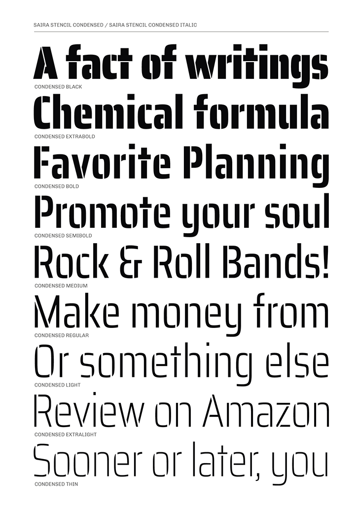
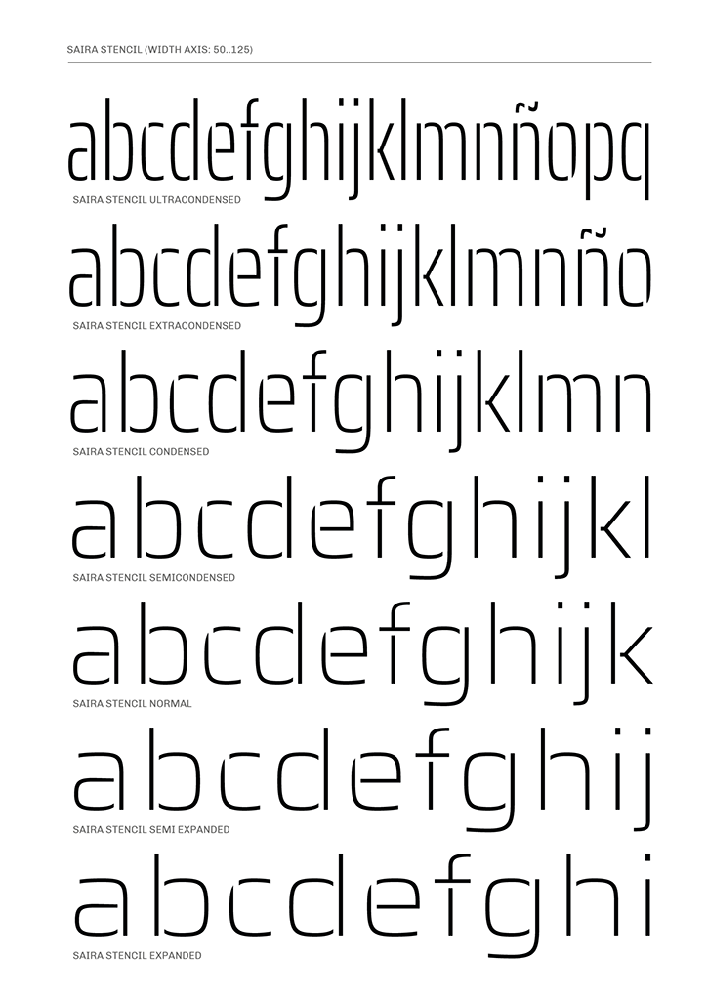

Saira Stencil is the cut variant of the Saira typeface family. It retains the core structure of its predecessor but is defined by the strategic addition of precise cuts—some logically placed, others deliberately offbeat. This intervention creates a typeface that is both sharp and visually striking, making it an optimal choice for titles, branding, and logotypes where a bold, memorable impression is required. It was designed by Héctor Gatti and developed by the Omnibus-Type Team.
Saira is a contemporary sans serif system, a versatile family of 126 styles (9 different weight variants, in 7 widths, plus matching italics.) It is part of the Press Series, for it is applicable in newspapers, magazines, books and websites. Showing high adaptability, it can be used in headlines and long texts. The original masters were designed by Héctor Gatti. The character sets were later completed by the Omnibus-Type Team.
To contribute, see github.com/Omnibus-Type/Saira.

